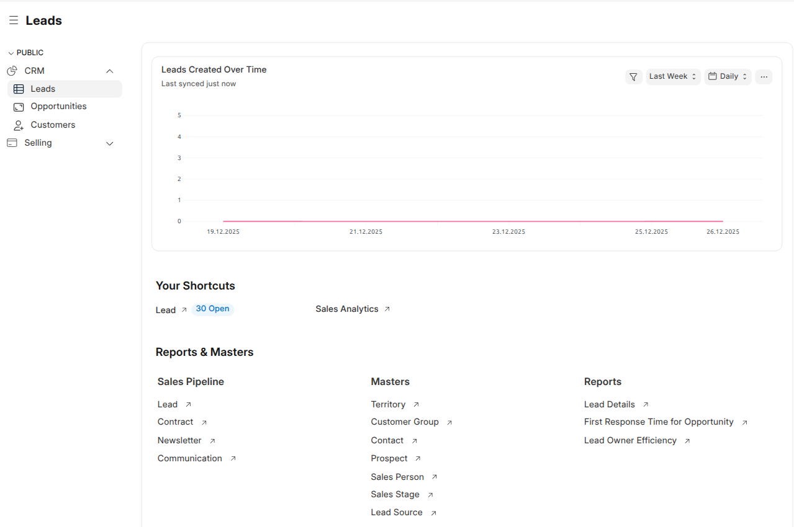
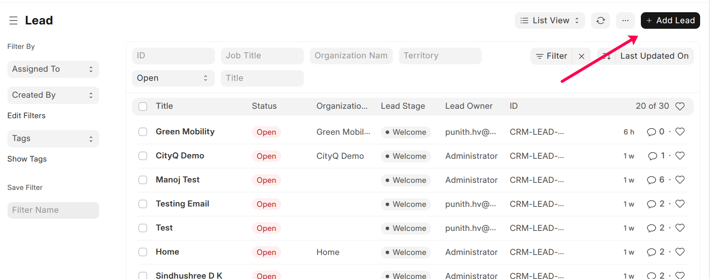

Leads
Leads Workspace
Path: CRM → Leads
The Leads workspace provides a consolidated view of lead-related
activities, performance metrics, and quick access to commonly used actions.

Leads Created Over Time
This chart displays the number of leads created over a selected time period.
It helps sales teams understand lead inflow trends and marketing effectiveness.
- Filter leads by time range (e.g., Last Week)
- View data grouped by day, week, or month
- Used for tracking lead generation performance
Your Shortcuts
The Your Shortcuts section provides quick access to frequently
used lead-related actions.
- Lead (Open) – View all open leads assigned to the user
- Sales Analytics – Analyze sales and lead performance metrics
Note: Shortcut visibility depends on user roles and permissions.
Reports & Masters
Sales Pipeline
- Lead
- Contract
- Newsletter
- Communication
Masters
- Territory
- Customer Group
- Contact
- Prospect
- Sales Person
- Sales Stage
Reports
- Lead Details
- First Response Time for Opportunity
- Lead Owner Efficiency
Note: Reports and master data access is controlled by role-based permissions.
Create a Lead
Path: CRM → Leads → Lead → Add New

Steps
- Enter Lead Name and Company Name (if applicable)
- Add Email ID and Mobile Number
- Select Lead Source and Lead Owner
- Enter required business details
- Click Save
Purpose
To capture potential customer details for future follow-up and sales engagement.
Note: From a Lead, users can directly create an Opportunity,
Quotation, Prospect, or Customer.
Qualify the Lead
Steps
- Open the Lead record
- Review customer interest and requirements
- Add Notes or Comments
- Schedule Calls, Meetings, or Tasks
- Click Save
Purpose
To determine whether the lead is qualified and ready to move forward in the sales pipeline.